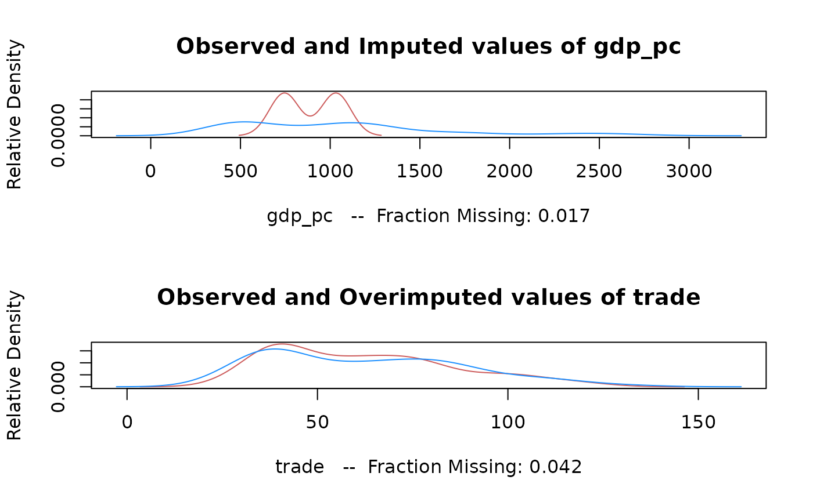

moPrep.RdA function to generate priors for multiple overimputation of a variable measured with error.
moPrep(
x,
formula,
subset,
error.proportion,
gold.standard = !missing(subset),
error.sd
)
# S3 method for class 'molist'
moPrep(x, formula, subset, error.proportion, gold.standard = FALSE, error.sd)
# Default S3 method
moPrep(
x,
formula,
subset,
error.proportion,
gold.standard = !missing(subset),
error.sd
)either a matrix, data.frame, or a object of class "molist"
from a previous moPrep call. The first two derive the priors
from the data given, and the third will derive the priors from the
first moPrep call and add them to the already defined
priors.
a formula describing the nature of the measurement error for the variable. See "Details."
an optional vector specifying a subset of observations which possess measurement error.
an optional vector specifying the fraction of the observed variance that is due to measurement error.
a logical value indicating if values with no measurement error should be used to estimate the measurement error variance.
an optional vector specifying the standard error of the measurement error.
An instance of the S3 class "molist" with the following objects:
priors a four-column matrix of the multiple overimputation priors
associated with the data. Each row of the matrix is
c(row,column, prior.mean, prior.sd)
overimp a two-column matrix of cells to be overimputed. Each
row of the matrix is of the form c(row, column), which
indicate the row and column of the cell to be overimputed.
data the object name of the matrix or data.frame to which priors refer.
Note that priors and overimp might contain results from
multiple calls to moPrep, not just the most recent.
This function generates priors for multiple overimputation of data
measured with error. With the formula arugment, you can specify
which variable has the error, what the mean of the latent data is, and
if there are any other proxy measures of the mismeasured variable. The
general syntax for the formula is: errvar ~ mean | proxy,
where errvar is the mismeasured variable, mean is a
formula for the mean of the latent variable (usually just
errvar itself), and proxy is a another mismeasurement of
the same latent variable. The proxies are used to estimate the
variance of the measurement error.
subset and gold.standard refer to the the rows of the
data which are and are not measured with error. Gold-standard rows are
used to estimate the variance of the
measurement. error. error.proportion is used to estimate the
variance of the measurement error by estimating the variance of the
mismeasurement and taking the proportion assumed to be due to
error. error.sd sets the standard error of the measurement
error directly.
moPrep(molist): Alter existing moPrep output
moPrep(default): Default call to moPrep
data(africa)
m.out <- moPrep(africa, trade ~ trade, error.proportion = 0.1)
a.out <- amelia(m.out, ts = "year", cs = "country")
#> -- Imputation 1 --
#>
#> 1 2 3 4 5 6 7 8 9 10 11 12 13 14 15 16 17 18 19 20
#> 21 22 23 24 25 26 27 28 29 30 31 32 33 34 35 36 37 38
#>
#> -- Imputation 2 --
#>
#> 1 2 3 4 5 6 7 8 9 10 11 12 13 14 15 16 17 18 19 20
#> 21 22 23 24 25 26 27 28 29 30 31 32 33 34 35 36 37 38 39 40
#> 41 42 43 44 45 46 47 48
#>
#> -- Imputation 3 --
#>
#> 1 2 3 4 5 6 7 8 9 10 11 12 13 14 15 16 17 18 19 20
#> 21 22 23 24 25 26 27 28 29 30 31 32 33 34 35 36 37 38 39 40
#> 41 42 43 44 45 46 47
#>
#> -- Imputation 4 --
#>
#> 1 2 3 4 5 6 7 8 9 10 11 12 13 14 15 16 17 18 19 20
#> 21 22 23
#>
#> -- Imputation 5 --
#>
#> 1 2 3 4 5 6 7 8 9 10 11 12 13 14 15 16 17 18 19 20
#> 21 22 23 24 25 26 27 28 29 30 31
#>
plot(a.out)

m.out <- moPrep(africa, trade ~ trade, error.sd = 1)
a.out <- amelia(m.out, ts = "year", cs = "country")
#> -- Imputation 1 --
#>
#> 1 2 3 4 5
#>
#> -- Imputation 2 --
#>
#> 1 2 3 4 5
#>
#> -- Imputation 3 --
#>
#> 1 2 3 4 5
#>
#> -- Imputation 4 --
#>
#> 1 2 3 4
#>
#> -- Imputation 5 --
#>
#> 1 2 3 4 5
#>